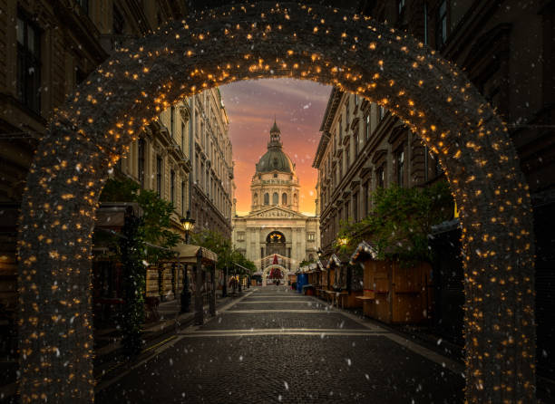

I really love to make handmade crafts,and there’s no better time for crafting than during the holiday season.
From glittering ornaments to cozy homemade gifts, DIY projects are a fun and creative way to spread holiday cheer.

I enjoy bakery and taste it!

Christmas just wouldn’t feel the same without movie nights! Imagine watching your favorite movies
while curling up in the cozy blanket and sipping hot chocolate? Just... what could be better than that?

Reading is the all time best way to relax and chill.But there is
something more special during holidays, especially for Christmas...

Traveling during the holidays is a magical experience! Whether it’s visiting family, enjoying
a festive getaway, or discovering hidden gems in a new city, Christmas always hits different!
